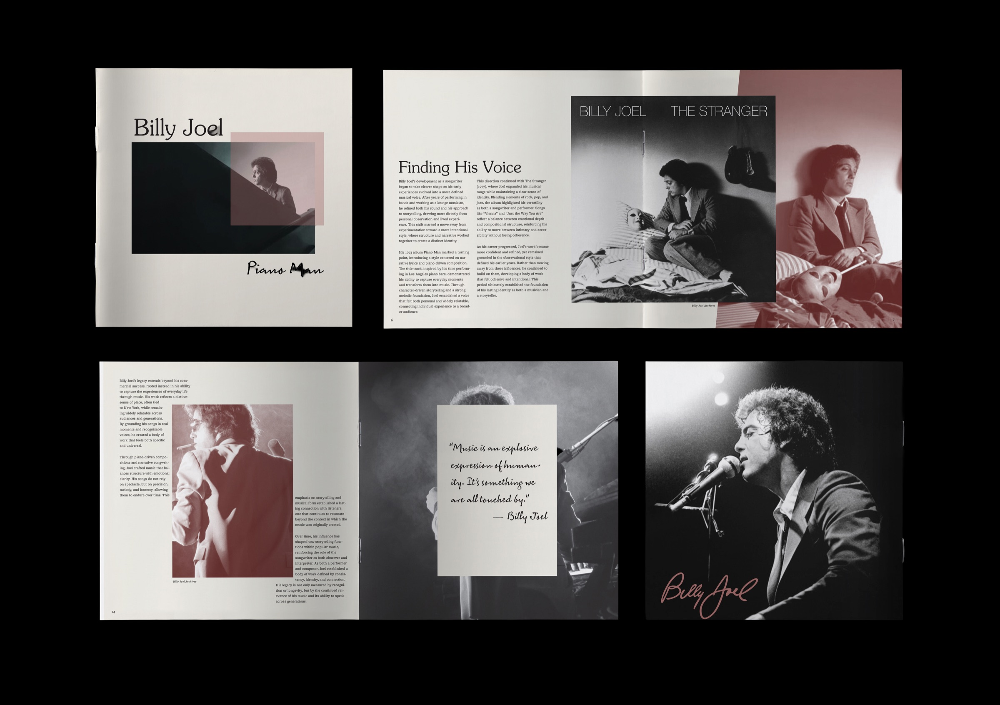

Billy Joel Tribute Booklet
Sixteen pages on Billy Joel's songwriting, especially Vienna, in cream, charcoal and burgundy.
- Deliverables
- 16-page booklet, typography and layout, colour system
01 — The storyBilly Joel Tribute Booklet
The brief
Capture the reflective feel of Billy Joel's songwriting, especially Vienna, in print.
The idea
A late-1970s palette of cream, charcoal and burgundy, archival-feeling references, and a structure that gives the music room to breathe.
The result
A 16-page booklet that works as both a tribute and an editorial reading of the songs.
02 — PagesBilly Joel Tribute Booklet
Cover and spreads


03 — In useBilly Joel Tribute Booklet
